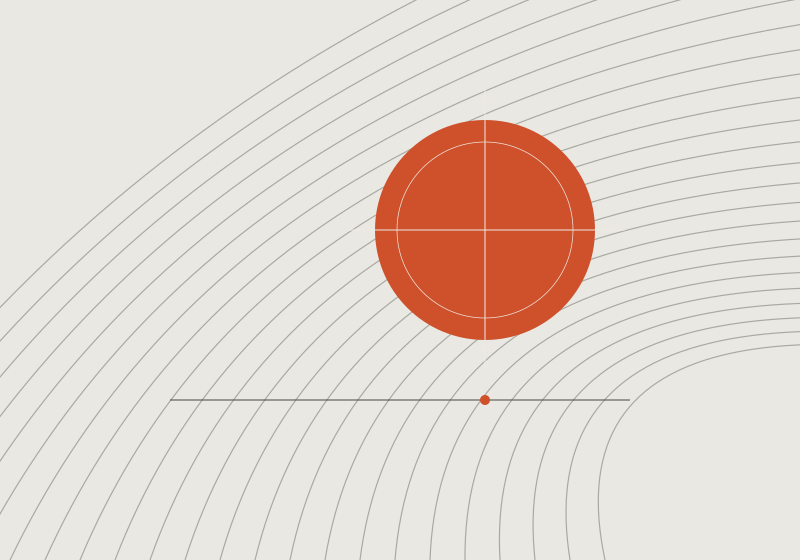
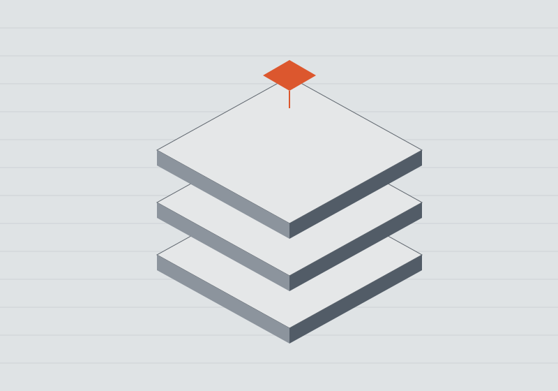

Software engineer Accra, Ghana
Ideas,
assembled.
I’m Samuel Boakye Asante, a Computer Science graduate focused on backend engineering. I turn clearly understood problems into practical software.
Drag to explore 360°. Use arrow keys when focused; Home resets the view.
Understand the problem. Build the foundations. Make it work.
Selected work
A little of what
I’m building.
Explore a farm-adaptation prototype and a hiring-pipeline backend.

Concept illustrationNovaYield
A decision-support prototype exploring crop-rotation options with environmental and local context.
Backend and frontend implemented
Concept illustrationApplication Tracking System Backend
A .NET 9 API for a hiring-pipeline application, using PostgreSQL and Entity Framework Core.
Backend engineeringExperience
Engineering across teams and contexts.
Recent work spans backend systems, internal business software, and full-stack applications.
Read my experienceFrom tenant-specific hiring data to farmer and transaction records, my work has focused on software that supports real operational workflows.